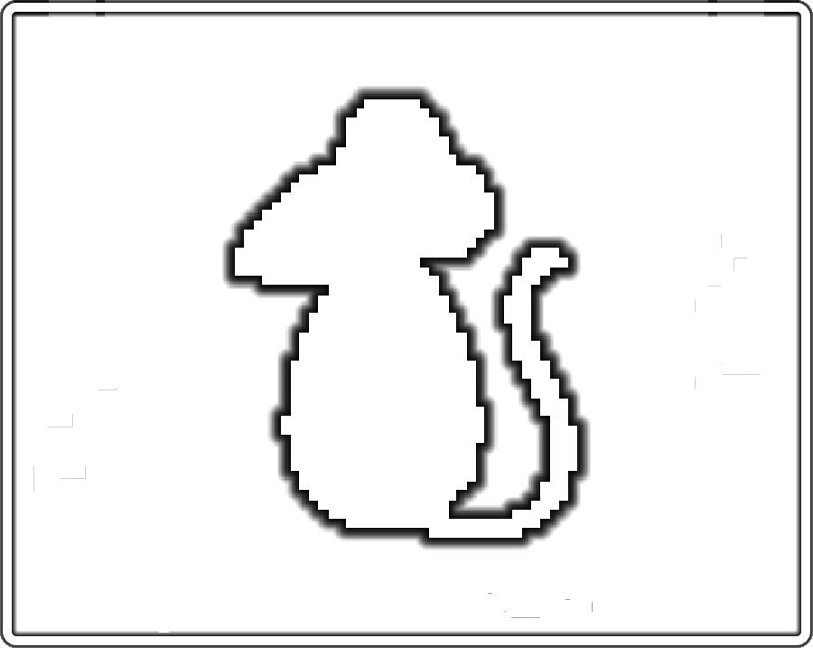

Comes in 3 unique flavors!
Primial
Your average Joe.
Primials were the first sentient beings on the planet, though not for long.
They make up most of the population at about 40% and are most adaptable.
Though they carry no great weight as a race, many kingdoms are ruled by Primials.
Silf
Taller than Primials and extra pointy ears.
Silf are born prodigeous, with almost super intelligence.
With their natural wisdom they typically study at the Hall of Myr.
The Council of White Knights consists mainly of Silf at about 60%.
Keeper
Shorter than Primials with a knack for growing beards.
Keepers dwell beneath the earth closer to the core of the planet.
Keepers are thought to watch over the core and fuel it when it's light dims.
Keepers are also known for hording minerals within a labyrinth beneath the surface.
|  |  |